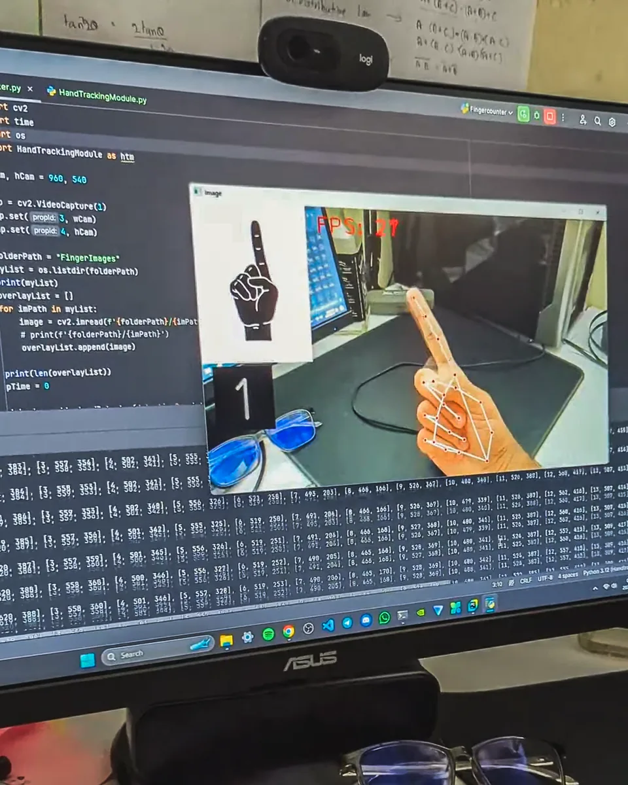

Python
OpenCV
Computer Vision
Hand Tracking
Finger Counter Using Python & OpenCV
A real-time computer vision application that detects hand landmarks and counts fingers through a live webcam feed. Built with OpenCV for frame processing and a custom hand tracking module, it overlays live detection metrics with high frame rate performance.